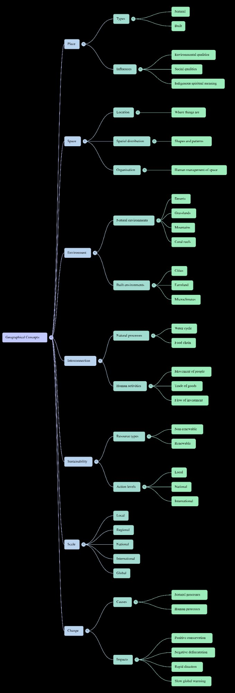

What We're Covering This Term
Place and Liveability — exploring the geographical concepts that shape where and how we live.
📚 Unit Overview
Topic: Water in Australia; Place and Liveability
Duration: 9 Weeks (Term 1)
In Year 7 Geography, we explore the concepts of place, space, environment, interconnection, sustainability, scale, and change. This term focuses on understanding liveability — what makes a place good to live in, and how we can measure and improve it.
📅 Weekly Essential Questions
- Week 1: What is PACER? How do I study for high school?
- Week 2: What are SPICESS?
- Week 3: What are BOLTSS and grid referencing?
- Week 4: How do we measure liveability?
- Weeks 5–6: Revision & Assessment
- Week 7: What is the Water Cycle?
Assessment Timeline
Keep track of your assessments and make sure your Interactive Notebook is up to date.
| Interactive Notebook (INB) | 2.5% | First review by end of Week 4 |
| CAT 1: Inquiry into Liveability within the City of Melville | 7.5% | Week 6 |
| CAT 2 Test: Water in Australia | 15% | Week 9 |
Key Terms & Definitions
Master these geographical concepts covered in the first four weeks.
What is PACER? How Do I Study for High School?
How to Remember Everything You Read
PACER is a study method that helps you retain information from textbooks, articles, and notes. It stands for:
- Preview — Skim the material first. Read headings, subheadings, bold terms, and summaries to get an overview.
- Annotate — Actively mark up the text. Highlight key points, write notes in margins, circle important terms.
- Connect — Link new information to what you already know. Ask yourself: How does this relate to other topics?
- Elaborate — Explain concepts in your own words. Teach it to someone else or write a summary.
- Review — Go back over your notes regularly. Spaced repetition (reviewing multiple times) locks information into long-term memory.
Why it works: PACER transforms passive reading into active learning. Your brain remembers information better when you engage with it multiple ways — seeing it, writing it, explaining it, and reviewing it.
Watch: The PACER study method explained
Interactive Notebook (INB) Setup
Your Interactive Notebook is where all your learning happens. Here's how it's organized:
- Table of Contents: First few pages. Update this as you add new sections.
- Vocabulary Pages: Dedicated section for key terms with definitions.
- Weekly Notes: Each week gets its own section with the Essential Question as the heading.
- Visual Learning: Use diagrams, mind maps, and color coding to organize information.
- Reflection Space: Leave room for questions, connections, and your own thoughts.
What are SPICESS?
The SPICESS Framework
SPICESS is an acronym for the seven key geographical concepts we use to understand the world. Every geographic inquiry uses these concepts to investigate and analyze places and environments.
Where things are located and how they're arranged. Includes patterns, distribution, and organization of features on Earth's surface.
Parts of Earth identified and given meaning by people. Can be natural or built. Influences our relationships and how we live.
Links between natural and human processes. Everything on Earth is connected — changes in one place affect others.
Earth is constantly changing through natural processes and human activity. Changes can be rapid or gradual, positive or negative.
Natural environments (deserts, forests, oceans) and built environments (cities, towns, farms). Most places are now a combination of both.
Using resources responsibly so they're available for future generations. Balancing present needs with long-term environmental health.
The spatial level of study: local (neighborhood), regional, national, international, or global. Same topic can be studied at different scales.

SPICESS Mind Map — all seven geographical concepts and their key ideas
What are BOLTSS & Grid Referencing?
BOLTSS — Essential Features of Every Map
Every good map needs these six features to be clear, accurate, and useful. Remember them with the acronym BOLTSS:
- B — Border: An outline or box drawn around the map to contain all information.
- O — Orientation: Shows direction, usually with a north arrow or compass rose.
- L — Legend (Key): Explains symbols, colors, and patterns used on the map.
- T — Title: Describes what the map shows and the area it covers.
- S — Scale: Shows how distances on the map relate to real-world distances. Can be written, line, or ratio scale.
- S — Source: Where the map information came from.
Types of Maps
Geographers use different types of maps for different purposes:
- Physical Maps: Show natural features like mountains, rivers, deserts, and oceans.
- Political Maps: Show built features like country borders, cities, and towns.
- Topographic Maps: Show land shape using contour lines. Closer lines = steeper land.
- Thematic Maps: Focus on specific themes like population, climate, or resources.
- Choropleth Maps: Use color shading to show data patterns (darker = more).
Grid Referencing
Area Reference (AR): Four-figure reference to find a general area.
- Find the square the object is in
- Put a dot at the bottom-right corner
- Format: AR + easting number + northing number
- Example: AR 2813
Grid Reference (GR): Six-figure reference to pinpoint exact locations.
- Find which grid square the object is in
- Divide that square into 10 more lines (imagine or use ruler)
- Count eastings (across) then northings (up)
- Format: GR + 3 easting numbers + 3 northing numbers
- Example: GR 176 616
Memory trick: "In the house, up the stairs" — Go across (eastings) FIRST, then up (northings).
Watch: Why is North always at the top of maps?
How Do We Measure Liveability?
What is Liveability?
Liveability is how suitable and enjoyable a place is to live in. What makes a place "liveable" depends on your wants and needs — age, income, cultural background, lifestyle, values, and beliefs all influence what you find liveable.
Features of a liveable place:
- Offers a temperate (mild) climate
- Easy to get around
- Good healthcare, work, and education opportunities
- Safe and stable
- Affordable
- Diverse
- Sustainable
- Attractive
Objective vs Subjective Factors
Things that can be measured and expressed as numbers:
- Climate: Temperature, rainfall data
- Environmental Quality: Air/water quality, pollution levels, noise
- Infrastructure: Number of hospitals, schools, transport options
- Safety & Stability: Crime statistics, police presence
- Access to Services: Distance to healthcare, education, amenities
Organizations like the Economist Intelligence Unit (EIU) rank cities worldwide using objective factors.
Things that cannot be easily measured:
- Spiritual Connections: Deep relationships with particular places (especially important for Aboriginal and Torres Strait Islander peoples)
- Sentimental Appeal: Places attached to memories and experiences
- Aesthetic Appeal: How a place looks and feels
- Personal Preferences: Individual likes and dislikes
- Connections to People: Proximity to family, friends, cultural groups
The OECD now conducts life-satisfaction surveys to capture subjective factors alongside objective measures.
Why We Live Where We Do
Three key questions help us understand liveability:
1. What do you like to do?
Access to activities you enjoy affects liveability. Surfers prefer coastal towns. Horse riders need rural areas with open spaces.
2. Where do you like to go?
How easy is it to travel to places you want to be? Can you walk, bike, or use public transport? Travel difficulty decreases liveability.
3. What are your favourite places?
Places can be special for aesthetic, sentimental, or spiritual reasons. These connections increase a place's liveability for you specifically.
What is the Water Cycle?
Understanding how water moves through the Earth's systems — and why Western Australia has such a unique climate.
The Water Cycle
The water cycle describes the continuous movement of water through the Earth's systems. It has three key stages:
Water on the Earth's surface — oceans, rivers, lakes — heats up and turns into water vapour (a gas). This can happen even below boiling point. The water vapour rises into the atmosphere.
As water vapour rises higher into the atmosphere, it cools and condenses back into tiny water droplets, forming clouds. The higher it rises, the cooler it gets.
When water droplets in clouds become too heavy, they fall back to Earth as rain, snow, or hail. The water returns to the surface and the cycle begins again.
Classroom experiment: You recreated the water cycle using a zip-lock bag filled with water and blue food dye, taped to a window. Over the school week, evaporation and condensation happened right before your eyes — the bag sweated water droplets, just like clouds forming in the atmosphere.
Why Does Western Australia Have the Best Climate?
Perth sits at 31 degrees south — the same latitude as the world's great deserts. So why isn't it one?
The Horse Latitudes (30–45° North and South)
At these latitudes, there is almost no energy or pressure in the air, creating very little rain. Too far from the poles for fast rotation-driven winds, too far from the tropics for cyclones — it is a zone of dead calm. Almost all the world's deserts sit here: the Sahara and Namib in Africa, the Atacama in South America, Death Valley in North America.
The Leeuwin Current — WA's Secret Weapon
Western Australia bucks this trend because of the Leeuwin Current — the longest coastal ocean current in the world. It flows from Indonesia, wraps around Cape Leeuwin in Augusta, and travels all the way to Tasmania. It is also one of the fastest currents on Earth, carrying enormous amounts of warm energy.
This warm current evaporates seawater into massive rain clouds and creates large storm fronts — known as frontal rainfall. This accounts for roughly 80% of all rain in Western Australia.
The current begins in early autumn and drives not just rainfall, but entire ecosystems — providing breeding grounds for whales, salmon, and crayfish, and making the South-West's Karri and Jarrah forests possible at a latitude where deserts should exist.
The Noongar Seasons
The Noongar people — the traditional custodians of the South-West — have understood the Leeuwin Current for tens of thousands of years. Their six-season calendar is shaped entirely by it:
The current begins. Cooler weather arrives and people move away from the coast into the forests.
The heaviest rainfall. Animals gather and breeding begins.
Rainfall replenishes the soil. Wildflowers bloom across the continent.
The current slows. Native reptiles return. People migrate back to the coast.
A season of fishing and hunting along the coast.
The hottest part of the year. Crabs grow to their largest. The current is about to begin again.
How the Leeuwin Current Connects to Our Concepts
The Leeuwin Current is a perfect case study for all seven SPICESS concepts:
- Space: Where rain fell shaped how WA organised itself into towns — the South-West and Wheatbelt became the most productive areas.
- Place: The meaning of the South-West has been shaped by the current for tens of thousands of years, forming the boundaries of Whadjuk Noongar country.
- Interconnection: Indigenous Australians migrated based on the current. It also provided lumber and farming seasons for early settlers.
- Change: Climate change is altering the current. The Indian Ocean Dipole can cool the ocean, reducing rainfall and increasing drought — changing how and where people live.
- Environment: The current creates the environment that makes Karri and Jarrah forests possible at a latitude where deserts should exist.
- Sustainability: Some sections of the Leeuwin Current are World Heritage Sites because of their importance to whale breeding.
- Scale: The current affects things locally (Perth's rainfall), nationally (WA's economy and forests), and internationally (whale migration routes).
Class Presentation — Why Does WA Have the Best Climate?
Step through the slides from the lesson below:
The Leeuwin Current — Extension Reading
Your teacher has written a literary piece about the Leeuwin Current, the Karri forests, the Noongar seasons, and the deep history of the South-West. It explores the landscape through story, geography, and personal reflection.
Recommended for students who want to go deeper — and for anyone who has driven Caves Road.
When teaching, I always look for texts with a dolly zoom.
Probably the most famous of cinematic techniques, it is an easy manoeuvre for students to recognise and leads them to discovering (or rediscovering) Spielberg through Jaws and Hitchcock through Vertigo. It also provides many students with their first visceral feeling within camera movement, so they can end up appreciating the finer craft of cinematography and editing that has come to dominate film making since the New Wave.
The dolly zoom's effect is in stark contrast to its deployment, which is extremely simple and can be copied by any student with steady feet and a DSLR camera. As the camera closes in on a dolly, the cameraman zooms in the opposite direction of the push or pull. This creates two effects: either it feels like the world is closing in around you (dolly in, zoom out), or it feels like you are having an out-of-body experience (dolly out, zoom in) — hitherto known as the Vertigo Effect.
The reason I start with this is to pre-load you before I introduce the comparison in the next paragraph — so if you have not seen either of these films, or are not aware of the technique, you can watch them before we continue.
Driving through Caves Road in the South-West of Australia has the same white-knuckle feel as a particularly well-crafted dolly zoom. As you cross 34 degrees south of the equator — around 150 kilometres south of Perth — you enter Karri country. These towering giants are a ghostly remnant of a, sadly, bygone era; their height may rise to 85 metres, as attested by The Stewart Tree, a 350-year-old Karri in Manjimup.
Caves Road is off-Broadway in the South-West, an area becoming more and more Broadway by Western Australian standards. As I write this, in 2026, Caves Road still holds the sort of gnostic horror that intrigued me as a kid, as the Karri trees — to a western eye — seem to be left undisturbed and may encroach on the soft, orange bauxite edges of the road.
As you drive, you grip the steering wheel tight. Even skilled drivers have to concentrate especially hard on the winding and dipping roads. And as you stare ahead, these Karri trees race past your vision. Slowly at first, and then faster and faster as they approach. With the intimacy of the doubled lines on the centre of the road, you feel your spirit become engaged in a primordial battle for control — as a doubling of the Vertigo and Jaws effect takes hold and 15 million tonnes of Karri seem to enclose around you.
Karri made the South-West rich. Its lumber was exceptionally strong, and its height and breadth made it unrivalled in the Southern Hemisphere. Redwoods in North America are routinely used as metaphors for resilience, strength, age, and wisdom — yet they are brittle and weak in comparison with Karri. Karri's extreme advantages created a bitter divide between Western and Eastern Australia at Federation, as the removal of tariffs threatened to swamp WA's Jarrah and Karri industries.
Karri's strength comes from the ancient land we stand on, and from a unique feature of the Western Australian coast.
Western Australia stands on the western side of the continent facing the Indian Ocean. It bucks the trend of most western coastlines at the Horse Latitudes — roughly 30 degrees north and south of the equator — which tend to be extremely dry, wedged between the westerlies and the trade winds. Around these latitudes across the world we see: the Namib and Sahara deserts on the western coast of Africa, and the Atacama Desert and Death Valley in the Americas.
What the western coast of Australia has over every other continent is a deep warm current that has shaped the Noongar seasons — the traditional custodians of this land.
The current is the world's longest coastal current, and its tentacles hug the western coast as it is pushed out from the tropics by the unstable Indonesian Throughflow — itself just trying to find an even keel through its 17,000-island archipelago. The current wraps around its namesake, Cape Leeuwin in Augusta, and finds its way across the Southern Ocean to Tasmania, providing breeding grounds for whales, salmon, and crayfish which, along with Karri, made colonial Australia an economic darling that punched above its weight.
The Noongar seasons are shaped by the current: Djeran — when the current starts — a time of cooler weather and movement away from the coast into the forests; Makuru — the heaviest rainfall — where animals gather and breeding begins; Djilba — where rainfall replenishes the soil and stunning wildflowers take over the continent; Kambarang — the current slows and dies — a return of native reptiles and migration back to the coast; Birak — a season of fishing and hunting; and Bunuru — the hottest part of the year, when crabs grow to a size worth catching, and just before the current starts up again.
My grandfather's way of summing up the Western Australian seasons was simpler, but no less refined after eighty years of living it: good footy weather and bad footy weather. His favourite time of the year was Djeran — crisp Saturday mornings, not cold enough for a beanie, rain permitted if soft, with little wind to incentivise good kicking.
As the rain pelts down on this ancient land — the oldest land in the world — we see a sense of rebirth and rejuvenation that cannot be contained by human language or metaphor. It is beyond biblical: the sheer amount of striving and survival mixed with what we assume to be good fortune is staggering to behold; and whether sentiency and agency is placed upon nature, God, The Dreaming, or something between all three, depends on the observer.
It is somehow the most natural thing in the world — and something seemingly unnatural also.
And you feel it. You feel it in your bones in this country. I have been all over the world, but I have never been as cold as when I camped in the Porongurups or along the Blackwood. There is always a sense you are being watched here; and it is when you are truly alone physically, you learn that you can never be truly alone spiritually. They are always there, and they never leave you.
The road no longer stretches before me; the dolly zoom is replaced by whip pans and fast cuts as we move from New Wave to twenty-first century film making. The forest constricts like an accordion, and I remember the sheer unfathomable nature of this land — and how it does not care for me at all.
The road and the forest: two gothic characters in their own way — sublime and unforgiving, bleak but romantic, scornful lovers who provide and devastate. All we can do is hold on with our aforementioned white knuckles and hope we can someday live to tell the tale.
Full Term Program
Complete 9-week program with learning intentions, vocabulary, and support materials for the entire term.
📄 Year 7 Geography Student Program
Geography: Water in Australia; Place and Liveability
Duration: 9 Weeks | Term 1 2026
This document contains the complete term program including all weekly learning intentions, vocabulary lists, textbook references, and assessment details. Use it to stay on track and prepare for upcoming topics.
⬇ Download Unit Outline (.docx)All Course Resources
Download study notes, mind maps, and reference sheets for every week of the term.
Detailed notes on all seven geographical concepts — Space, Place, Interconnection, Change, Environment, Sustainability, Scale.
⬇ Download PDFReference guide covering physical, political, topographic, thematic, choropleth maps and the six essential BOLTSS features.
⬇ Download PDFStep-by-step guide to four-figure area references (AR) and six-figure grid references (GR) with worked examples.
⬇ Download PDFNotes on objective and subjective liveability factors, EIU rankings, and what makes cities liveable worldwide.
⬇ Download PDFVisual mind map summarising subjective and objective liveability factors — great for quick revision before the CAT.
⬇ Download PDFComplete 9-week program with all learning intentions, vocabulary, textbook references, and assessment details.
⬇ Download DOCX